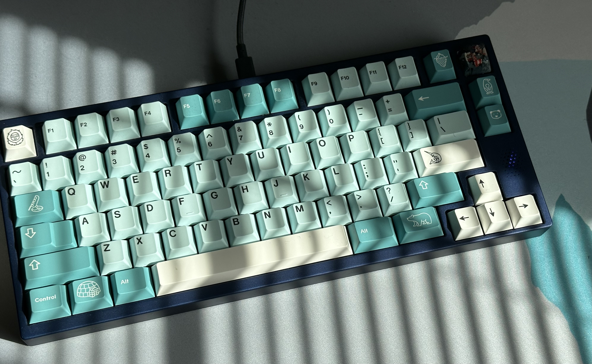
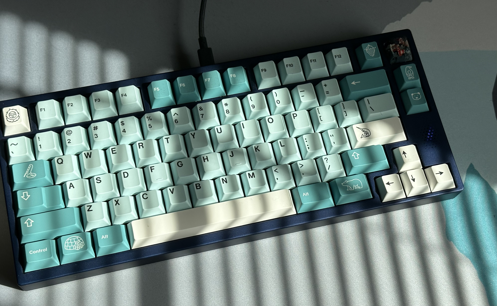

About Me:
Some of the things I like to do in my free time:
Bouldering
To stay in shape I like to go bouldering, a type of rock climbing with shorter, but usually more technical routes, or "problems" as they are usually reffered to. The problems are graded on a V-scale from v1 to v17, but most indoor gyms don't have problems grade above v9, and those that do usually don't get above v11. As of now, I have completed a few v7's, but I think I could probably get an 8 right now if I tried one that suited my body type.
I usually climb for about an hour and a half 3 days a week at Armadillo Boulders, and this is the main way I try and stay in shape.
 

Mechanical Keyboards
When I have the chance I also like to build keyboards. For some reason I really enjoy picking out a bunch of parts and soldering them together, then tweaking the final product and tuning the sound and feel. I can't really do this too often though, because the parts are pretty expensive and take a long time to ship, and it can take hours to finish putting together and getting the sound you want out of a board.
Video Games
I also play a fair amount of video games. Some of my favorites are Risk of Rain 2, XCOM 2, and League of Legends.
I'm not too hardcore into any of these, but they're a good way to pass the time when theres nothing to do, since I can only be in the gym so often before my skin starts to peel off.